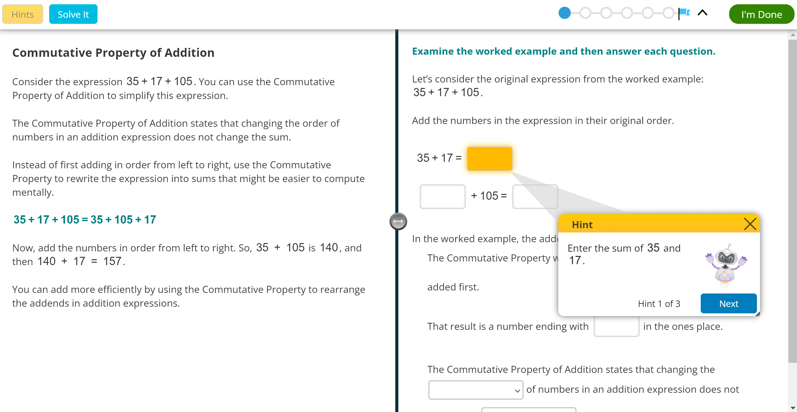
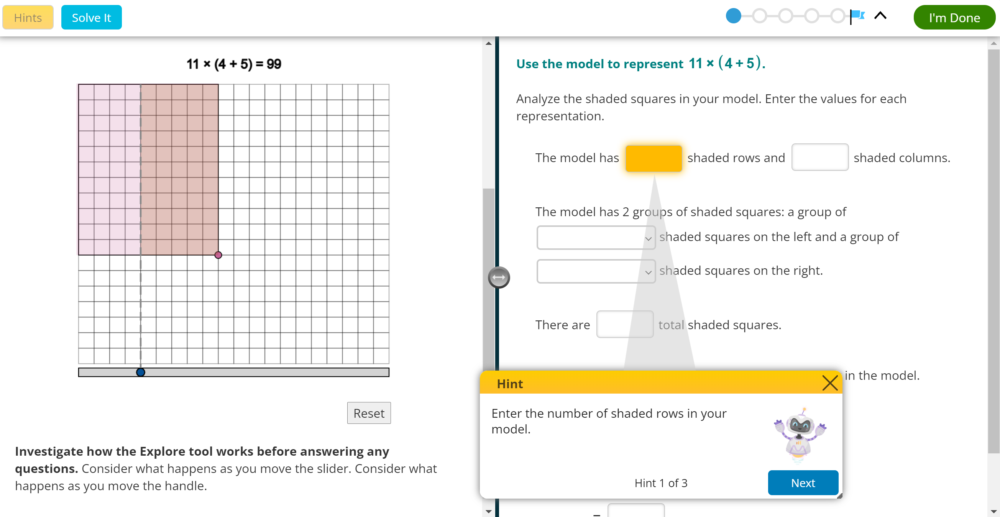
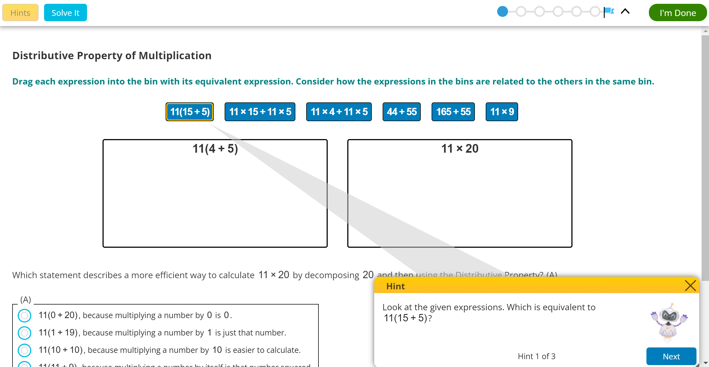
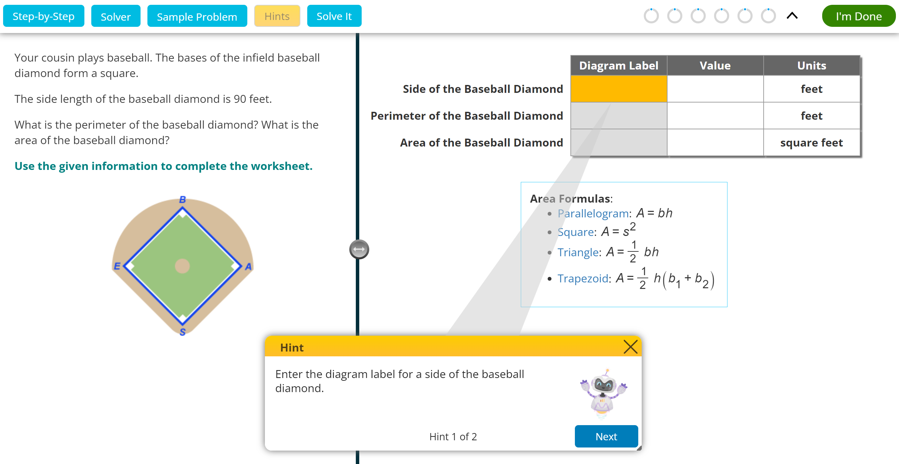
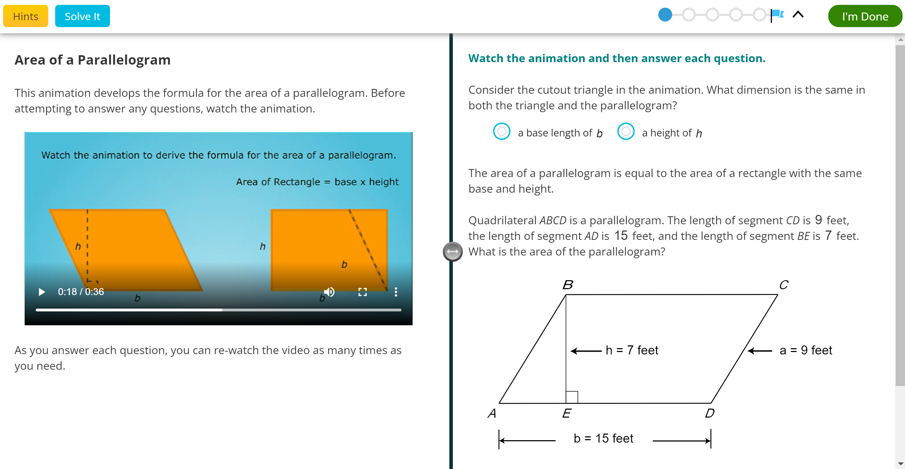
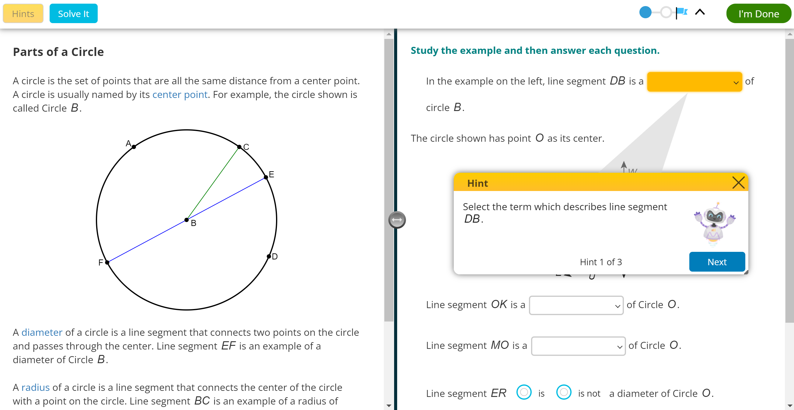
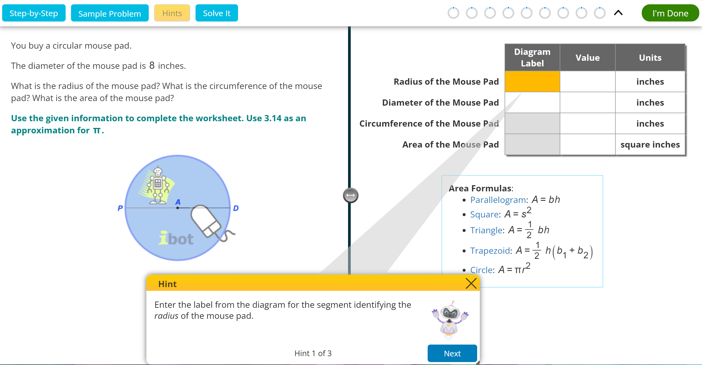
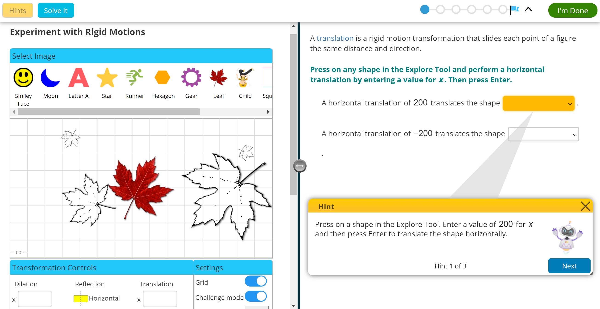
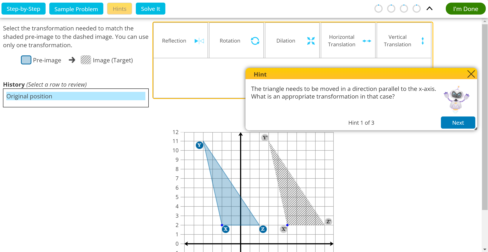

Commutative and Associative
Properties
Properties

Students follow worked examples to rewrite expressions using the commutative and associative properties of addition and multiplication.
⏳ 0:34 📖 6-EE.3
Exploring the Distributive Property with Numeric Expressions

Students explore modeling the Distributive Property of multiplication over addition with numeric expressions using an interactive grid.
⏳ 0:11 📖 6-EE.3
Using the Distributive Property with Numeric Expressions

Students practice applying different distributive properties to rewrite numeric expressions and calculate efficiently.
⏳ 0:15 📖 6-EE.3
Calculating Area of Rectangles

Students calculate the areas of rectangles and squares in mathematical and real-world situations.
⏳ 0:31 📖 6-G.1
Developing Area Formulas

Students watch animations and answer questions to derive the formulas used to calculate the areas of parallelograms, triangles, and trapezoids.
⏳ 0:22 📖 6-G.1
Investigating Circles

Students identify parts of a circle, analyze the ratio of circumference to diameter of various circles, and then define pi.
⏳ 0:08 📖 7-G.4
Developing the Area Formula for Circles

Students informally derive the area of a circle by investigating the relationship between circumference and area. They calculate...
⏳ 0:10 📖 7-G.4
Calculating Circumference and Area of Circles

Students determine the circumference and area of circles using diagrams and real-world objects. Students work strategically to identify measurements...
⏳ 0:32 📖 7-G.4
Experimenting with Rigid Motions

Students use an interactive Explore Tool to perform translations, reflections, and rotations. Students also identify vertical and horizontal symmetry...
⏳ 0:25 📖 8-G.1
Translating Plane Figures

Students will select translations that match a pre-image to a target image figure, given a reference point.
⏳ 0:35 📖 8-G.2